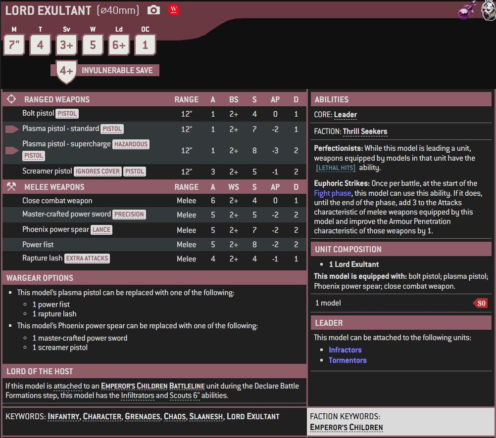

1 / 3

Miniature
2 / 3

Box Art
3 / 3

Artwork
A Lord Exultant is an Heretic Astartes Chaos Lord of the Emperor's Children Legion who commands one of their disparate warbands. Lords Exultant often prefer to fight in close combat using melee weapons to maximise the pleasure they get from the sensations of battle and dealing out pain and death.
Many Emperor's Children warbands since the end of the Horus Heresy have been commanded by one of the many corrupted Heretic Astartes Chaos Lords pledged to Slaanesh's service. These so-called "Lords Exultant" are sadistic strategists who delight in proving their tactical superiority by weaving complex battle plans across war-torn worlds like artists painting a masterpiece.
Their dark charisma and bottomless imagination for audacious cruelty and new forms of amoral sensation gives them great control over the preening and self-absorbed warriors of the Emperor's Children, coupled with well-honed combat skills using a wide variety of master-crafted wargear.
The Lords Exultant often prefer to use melee weapons in combat, such as various Power Weapons, preferring the pleasure brought by the sensations of killing their foes in close combat rather than standing at range. Known by their allies and enemies alike as sadistic strategists, Lords Exultant view the battlefield as an exhibition arena where only they are worthy to perform. Many Emperor's Children warbands are commanded by these figures, who dominate through their superior acumen, martial prowess, and cruel yet inventive imagination.
